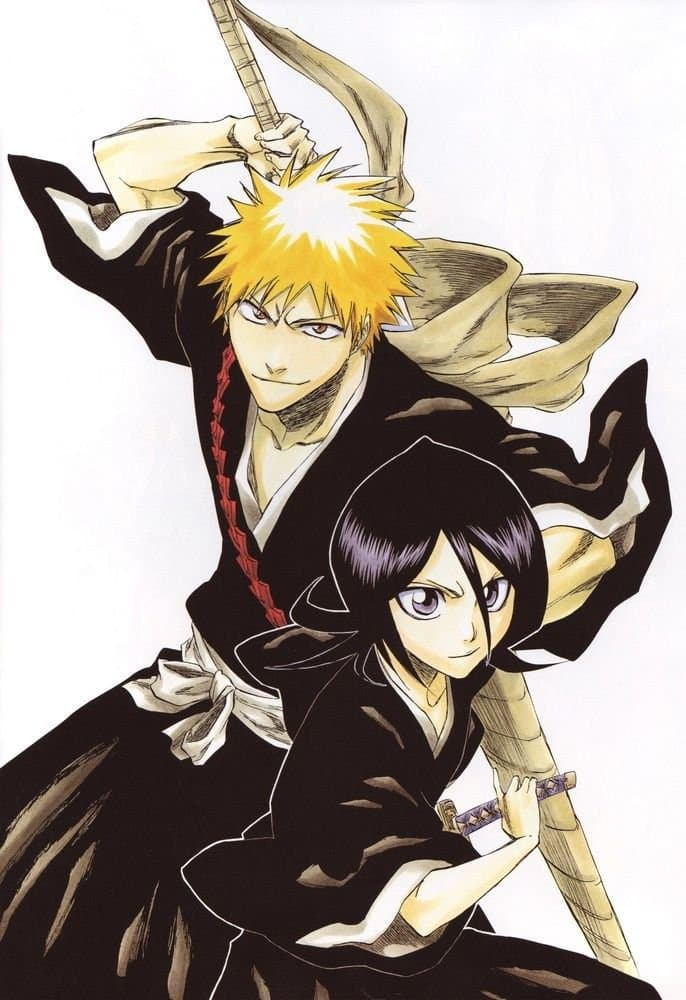
일본의 유명만화, 블리치.
고교생 쿠로사키 이치고가 우연히 만난 사신, 쿠치키 루키아에게 힘을 양도받아 사신대행이 되어, 악한 영혼인 홀로(호로)를 퇴치하는 이야기다.
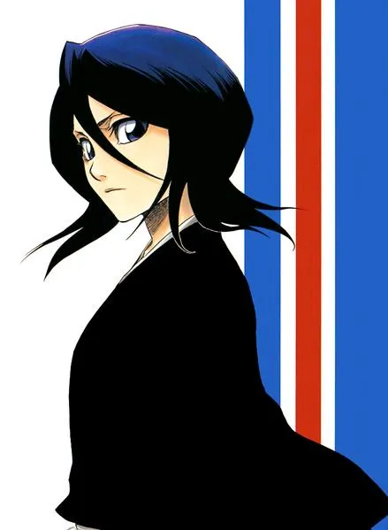
블리치는 연애를 별로 다루지 않지만 많은 독자들은 루키아를 히로인으로 여겼다.
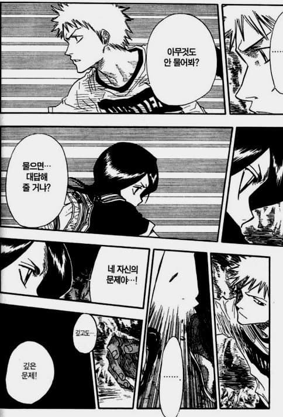
홀로를 퇴치하는 내용이라서, 자연스레 이치고와 루키아가 같이 행동하는 장면이 엄청 많았기 때문이다.
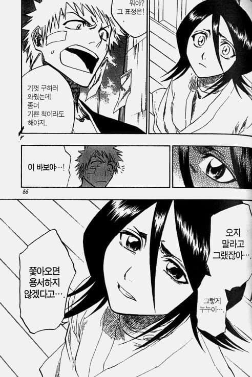
이치고에게 영력을 양도했다는 죄목으로, 루키아가 원래 살던 영혼들의 세계 소울소사이어티에 끌려와 처형당할 위기에 처하자,
이치고와 동료들이 목숨을 걸고 구하러 와줘서 루키아 히로인설은 더욱 큰 힘을 얻었다.
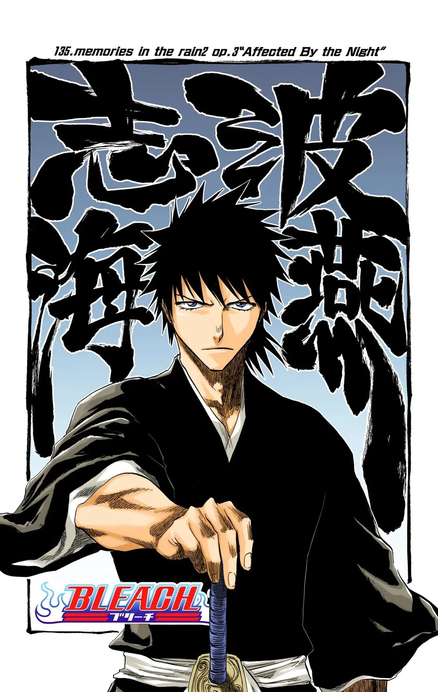
루키아가 연모하던 상관, 시바 카이엔(작중 시점 사망)이 성격이나 외모가 이치고와 아주 닮았다는 것도 루키아 히로인설의 주요 근거였다.
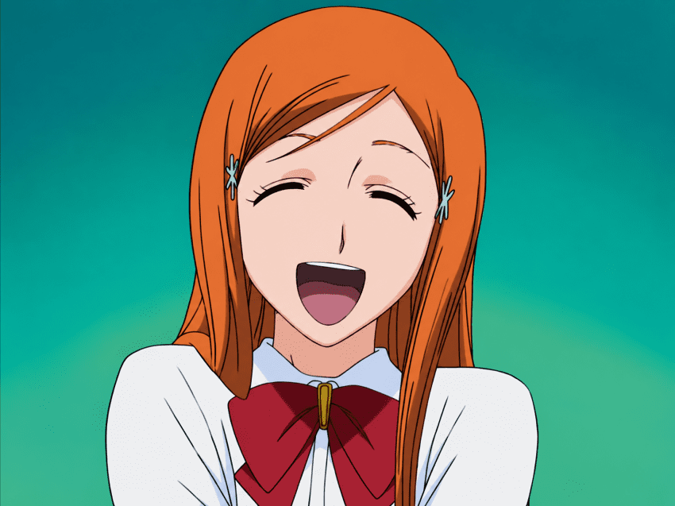
이치고를 짝사랑하는 동급생 이노우에 오리히메를 히로인으로 생각하는 사람은 별로 없었다.
오리히메는 그냥 동급생, 이치고 일행의 힐러 느낌이었다.
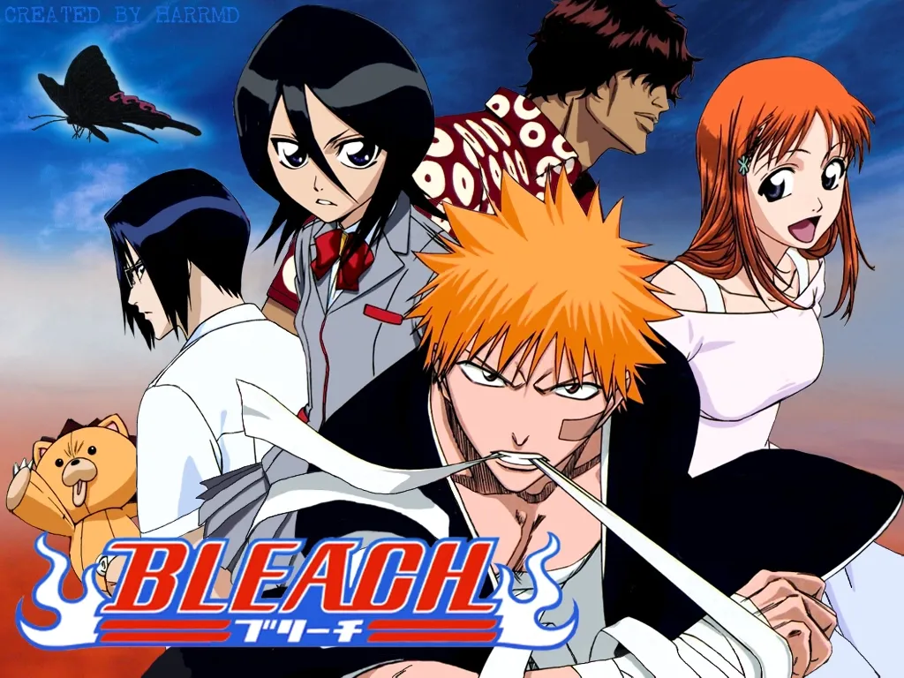
여기다가 블리치 애니 제작팀이 맘대로 원작에 있는 오리히메가 이치고에게 호감을 드러내거나 이치고를 배려하는 장면을 삭제하거나 바꿔, 오리히메를 억까했다.
그리고 이치고가 루키아를 생각하는 장면을 멋대로 추가하는 등, 루키아를 매우 편애하며 이치고와 이어주려 했다.
애니 때문에 독자와 시청자들 사이에서 루키아 히로인설은 점점 강해졌다.
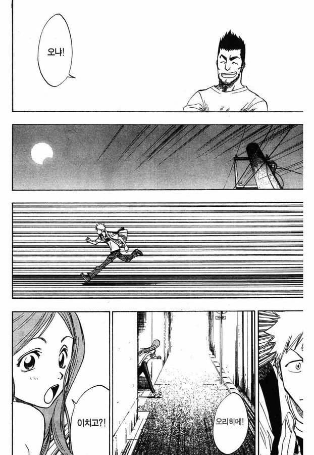
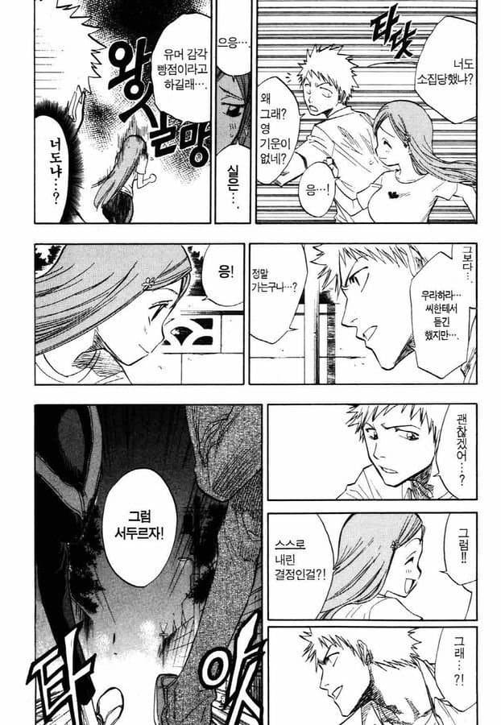
예를 들어 루키아를 구하러 소울소사이어티에 갈때 원작은 이치고와 오리히메가 같이 집합장소로 달려가는데
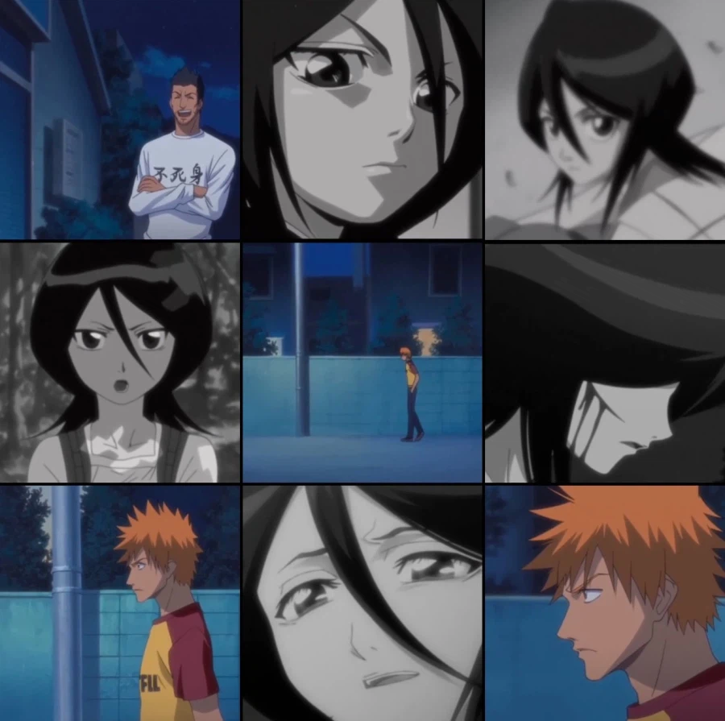
애니는 이치고가 혼자서 루키아를 생각하며 집합장소로 가는 식이다. 원작에 있지도 않은 연출로 이치고와 루키아의 감정을 연애감정으로 몰아가려고 한 경우가 굉장히 많다.
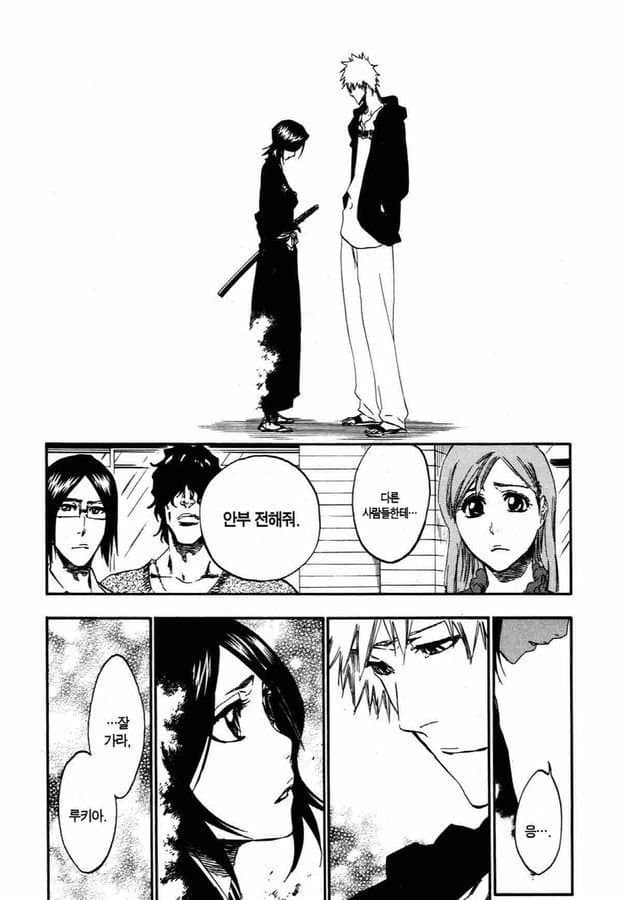
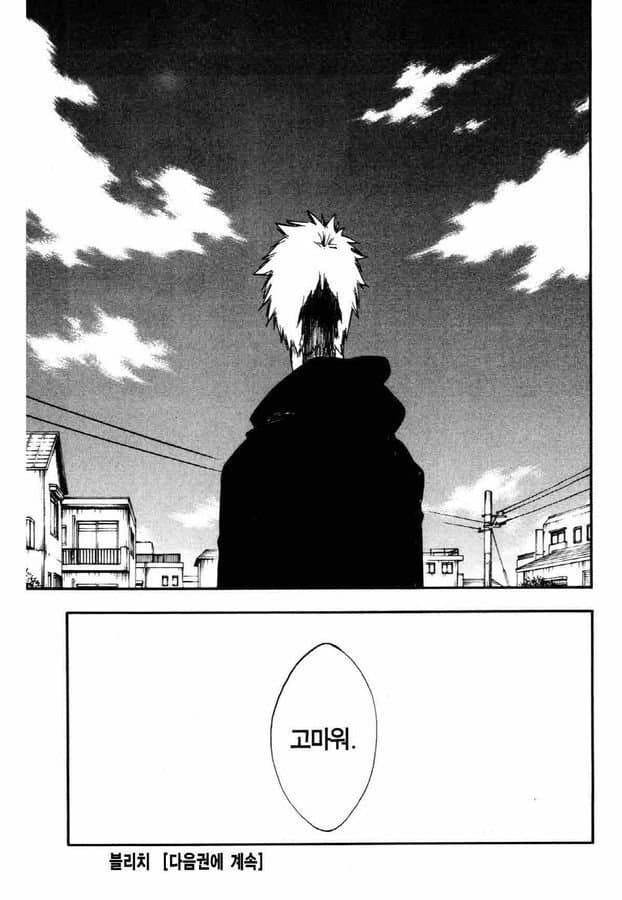
또 좀 나중 이야기지만, 이치고가 사신의 힘을 잃고 루키아와 작별하는 장면은 원작에선 고작 몇 페이지인데
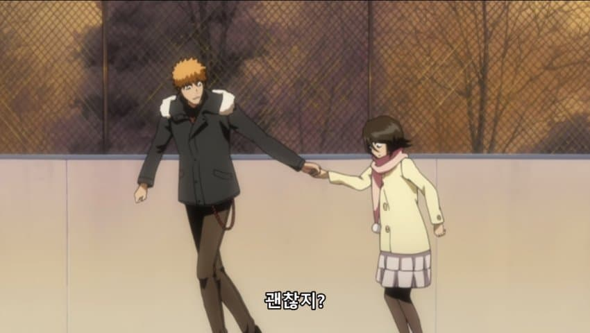
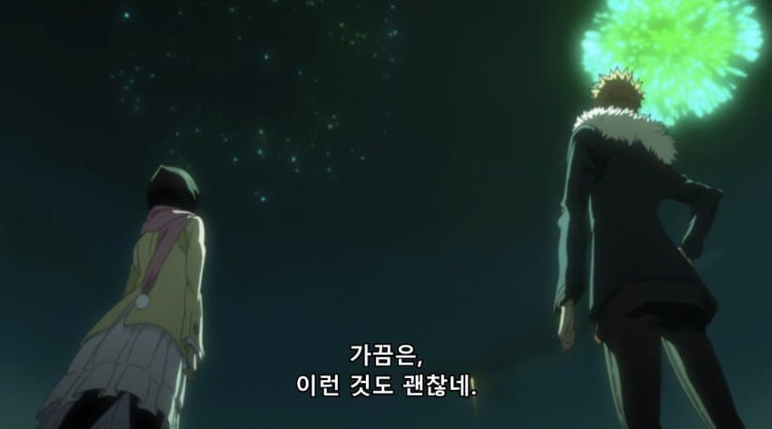
애니는 이치고가 힘을 잃기 전 루키아와 연인이 데이트하듯 시간을 보내는 오리지널 에피소드를 아예 1화 방영했다.
원작 왜곡이 하도 많아서 블리치의 작가 쿠보 타이토는 옛날 블리치 애니를 싫어한다고...
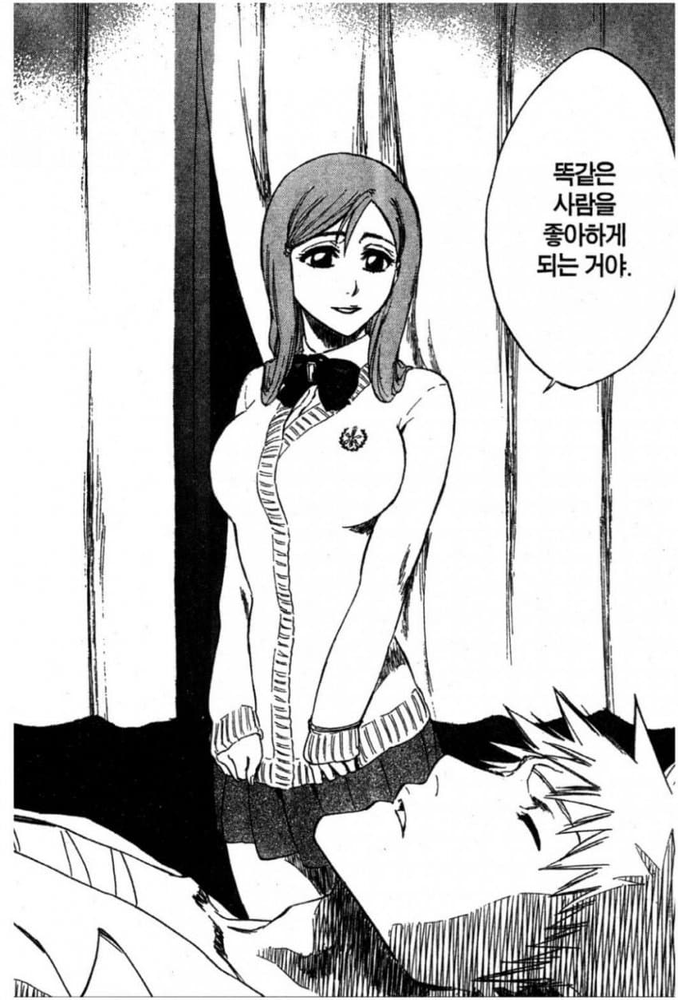
아무튼 대부분 루키아가 이치고와 맺어질거라고 생각하고 있었지만, 사실 쿠보는 처음부터 이치고를 오리히메와 맺어줄 생각이었다.
아란카르(아란칼)편부터 오리히메가 순식간에 히로인으로 부상한다.
소울소사이어티 편의 루키아와 같은 붙잡힌 히로인 포지션에다, 루키아는 이치고에게 호감을 드러내는 장면이 없지만, 오리히메는 호감을 드러내는 장면이 많이 등장했다. 오리히메는 극단적 루키아팬덤의 공적으로 등극한다.
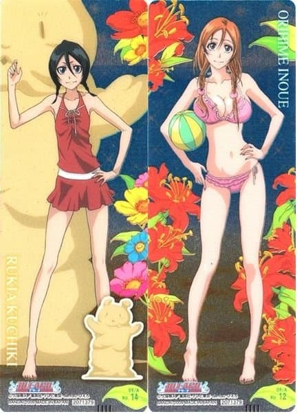
게다가 루키아는 쿨하고 보이쉬하고 마른 몸매인데, 오리히메는 4차원에 발랄하고 몸매가 좋은 등 대척점이 많아서 극단적 루키아팬덤은 오리히메에 강한 적대감을 드러냈다.
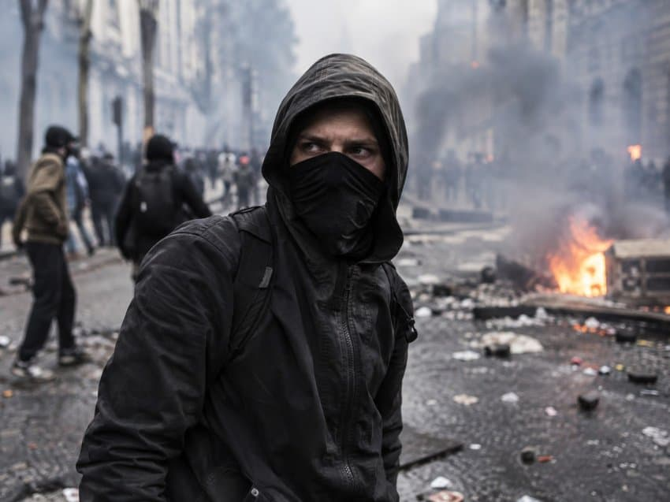
점점 오리히메가 이치고와 이어질 낌새가 보이자 루키아 극성 팬덤, 이른바 루폭도는 폭동을 일으키기 시작한다.
이들이 부린 패악질은 만화 역사에 남을 수준이다.
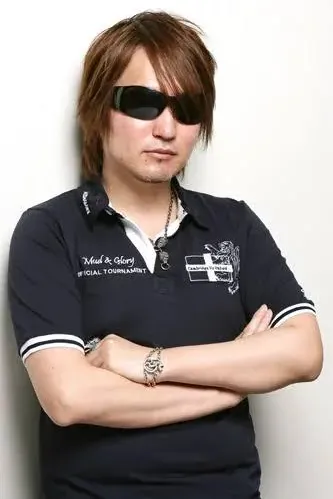
쿠보 타이토에게 매일같이 트위터 등으로 악성메시지 폭탄을 보냈다.
루키아를 이치고와 이어달라는 요구도 하고, 오리히메를 혐오한다고 하기도 하고, 오리히메를 죽여달라고 요구도 하고, 오리히메 고어짤도 보냈다.
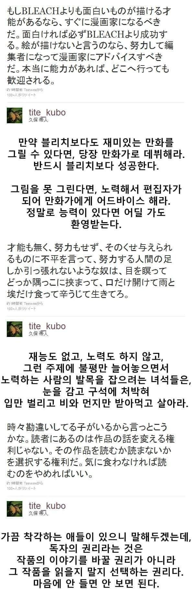
쿠보는 루폭도들의 지독한 사이버불링에 대노하여 '비와 먼지나 먹고 살아라'는 유명한 말을 남긴다.
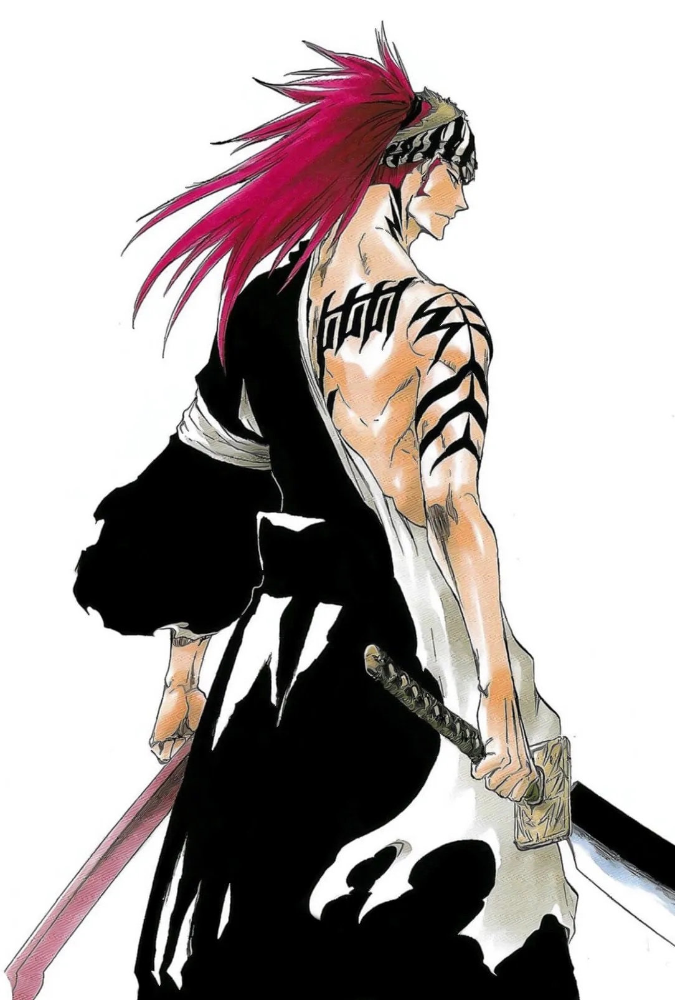
인터넷상에서 루키아에게 위협, 방해가 되는 캐릭터들의 악담도 쏟아냈다.
이들의 주적은 당연히 오리히메지만 다른 캐릭터들도 욕을 먹었다. 루키아를 짝사랑하는 아바라이 렌지라는 캐릭터도 표적이 되었다. 이치고-루키아 연애관계(이치루키)에 방해가 된단 것이다.
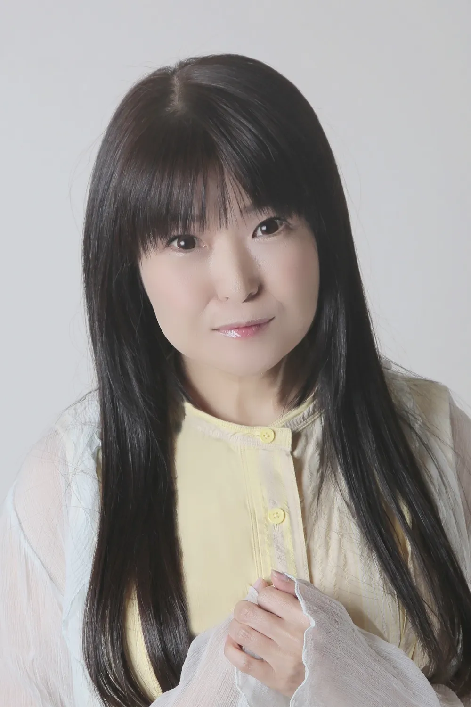
루폭도들의 또다른 특기는 선동, 날조, 유언비어 유포다.
오리히메 성우인 마츠오카 유키가 쿠보에게 부탁해서 오리히메를 히로인으로 만들었다는 악질적 유언비어를 유포했다.
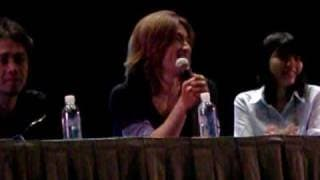
하와이에서 열린 카와이콘이라는 행사에 이치고의 일본 성우 모리타 마사카즈와 미국 성우 조니 용 보쉬가 참석했는데,
모리타는 이치고에게는 오리히메가 어울린다는 취지로 말했다가 루폭도들한테 엄청난 악플공격을 받았다.
이때 모리타는 극성 루키아 팬덤 눈치를 보고 루키아, 아이 러브 유란 말을 덧붙여 해줬는데, 이 부분만 떼어서 이치고 성우도 이치루키를 지지한다는 날조선동을 하기도 했다.
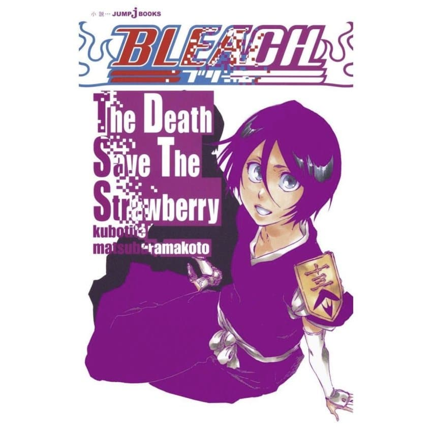
이치고가 사신의 힘을 잃은 후, 루키아가 힘을 되찾아주기 위해 다른 사신들에게 협력을 요청하는 이야기를 다룬 외전 소설 BLEACH The Death Save The Strawberry.
소설 후기에서 쿠보가 '이 작품(외전소설)은 틀림없이 이치고와 루키아의 이야기라는 것.'이라고 쓰자, 루폭도들은 '쿠보도 블리치가 이치고와 루키아의 사랑이야기라고 인정했다'고 선동했다.
선동, 날조가 너무 많고 심해서 다 열거할 수도 없다.
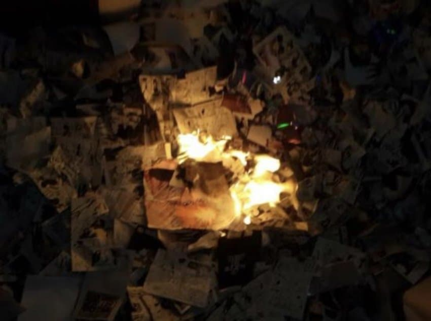
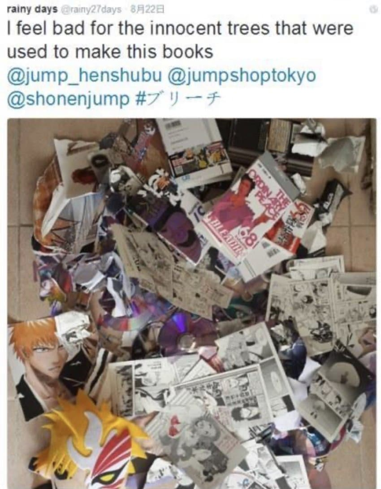
결국 이치고는 오리히메와 이어지고, 루키아는 렌지와 이어지며 완결이 나자 책과 굿즈를 찢거나 불태운뒤 인증하기도 했다. 내 무습다....
이들은 완결 10년이 지난 지금도 루키아가 이치고와 맺어지지 않은 현실을 부정한다고.
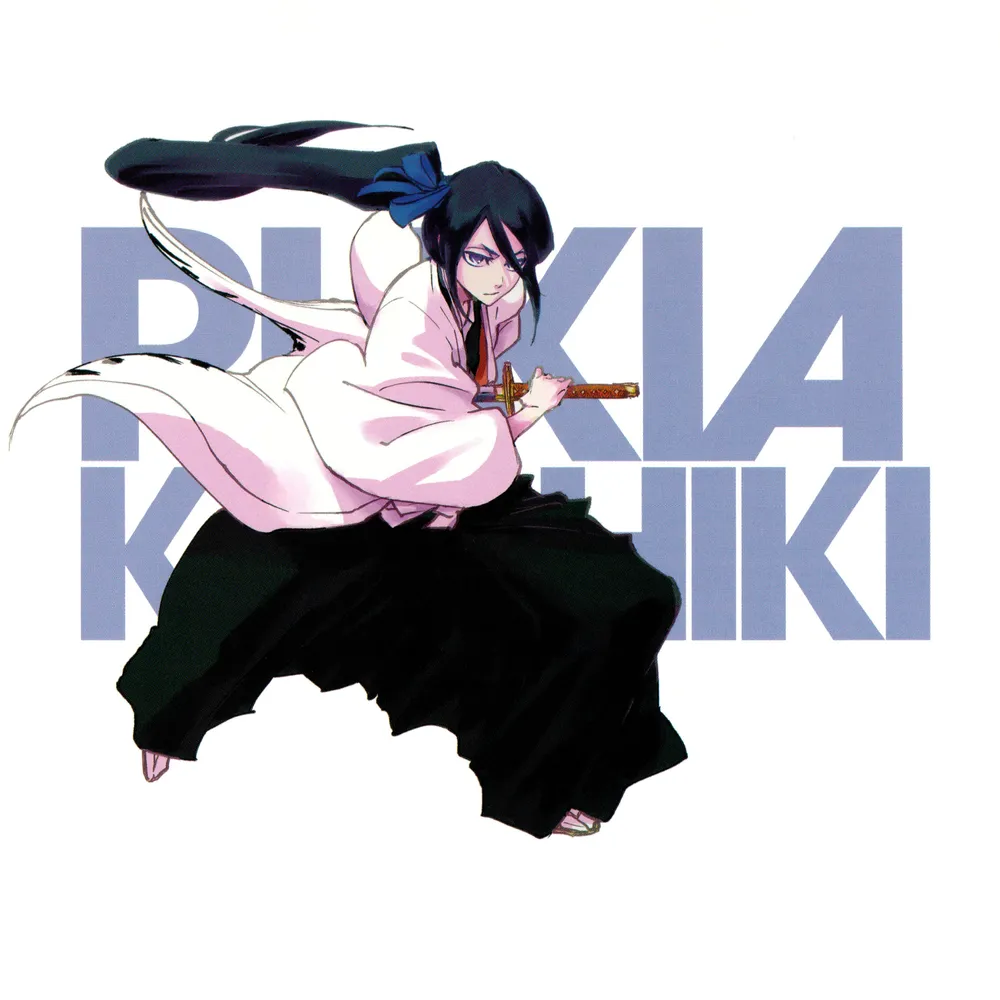
당연히 모든 루키아팬들이 저렇지 않으며, 정상적 루키아 팬덤은 극성 팬덤을 아주 싫어한다.
쿠보도 정상적 팬덤과 극성 팬덤을 구별한다고 말했다.
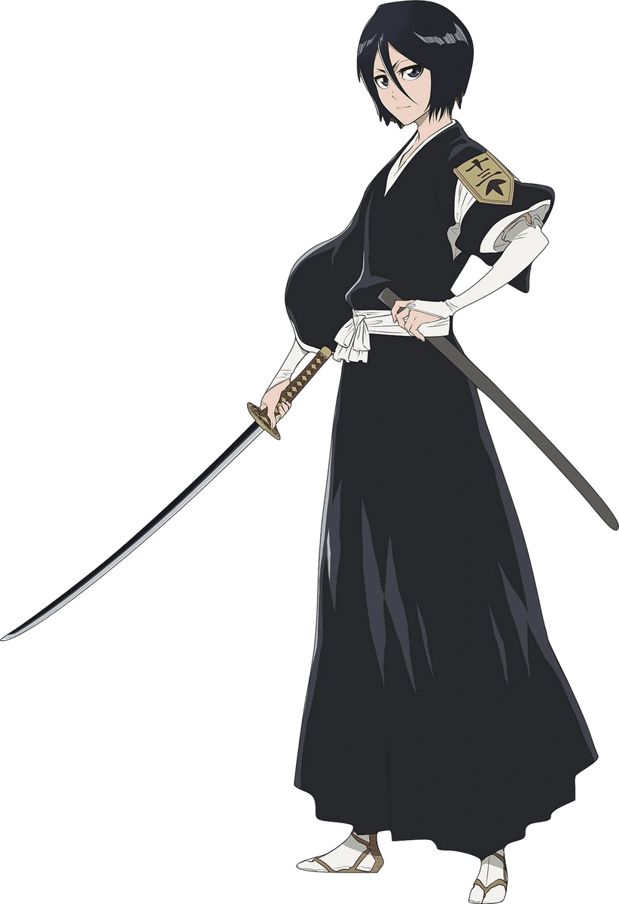
루키아는 굉장히 매력적이고, 캐릭터 인기투표 최상위권을 항상 지킨 인기 캐릭터지만
이런 극단적 팬덤까지 생겨날 일인지 통탄스럽기만 하다.
댓글
수집 당시 댓글 335개
· ㅇㅇ · 11.09 03:06:08
· ㅇㅇ · 11.09 03:06:10
· ㅇㅇ · 11.09 03:06:31
· ㅇㅇ · 11.09 03:07:20
· ㅇㅇ · 11.09 03:08:13
· ㅇㅇ · 11.09 03:08:36
· ㅇㅇ · 11.09 03:10:09
· ㅇㅇ · 11.09 03:10:43
· ㅇㅇ · 11.09 03:11:23
· ㅇㅇ · 11.09 03:13:24
· ㅇㅇ · 11.09 03:13:44
· ㅇㅇ · 11.09 03:15:19
· ㅇㅇ · 11.09 03:15:22
· ㅇㅇ · 11.09 03:16:32
· ㅇㅇ · 11.09 03:17:00
· ㅇㅇ · 11.09 03:17:06
· ㅇㅇ · 11.09 03:18:32
· ㅇㅇ · 11.09 03:19:41
· ㅇㅇ · 11.09 03:21:27
· ㅇㅇ · 11.09 03:22:20
· ㅇㅇ · 11.09 03:23:31
· ㅇㅇ · 11.09 03:25:09
· ㅇㅇ · 11.09 03:26:13
· ㅇㅇ · 11.09 03:28:41
· ㅇㅇ · 11.09 03:28:48
· ㅇㅇ · 11.09 03:30:03
· ㅇㅇ · 11.09 03:30:05
· ㅇㅇ · 11.09 03:30:41
· ㅇㅇ · 11.09 03:31:24
· ㅇㅇ · 11.09 03:32:02
· ㅇㅇ · 11.09 03:32:14
· ㅇㅇ · 11.09 03:32:39
· ㅇㅇ · 11.09 03:32:59
· ㅇㅇ · 11.09 03:33:35
· ㅇㅇ · 11.09 03:37:06
· ㅇㅇ · 11.09 03:39:08
· ㅇㅇ · 11.09 03:41:50
· ㅇㅇ · 11.09 03:42:14
· ㅇㅇ · 11.09 03:43:04
· ㅇㅇ · 11.09 03:44:54
· ㅇㅇ · 11.09 03:45:12
· ㅇㅇ · 11.09 03:46:03
· ㅇㅇ · 11.09 03:46:56
· ㅇㅇ · 11.09 03:47:00
· ㅇㅇ · 11.09 03:47:55
· ㅇㅇ · 11.09 03:48:29
· ㅇㅇ · 11.09 03:49:13
· ㅇㅇ · 11.09 03:49:15
· ㅇㅇ · 11.09 03:50:14
· ㅇㅇ · 11.09 03:51:21
· ㅇㅇ · 11.09 03:53:24
· ㅇㅇ · 11.09 03:55:49
· ㅇㅇ · 11.09 03:58:18
· ㅇㅇ · 11.09 04:00:27
· ㅇㅇ · 11.09 04:07:26
ㅇㅇ · 11.09 02:27:05
· ㅇㅇ · 11.09 02:28:36
· ㅇㅇ · 11.09 02:29:40
· ㅇㅇ · 11.09 02:34:30
· ㅇㅇ · 11.09 03:59:30
ㅇㅇ · 11.09 02:30:10
ㅇㅇ · 11.09 02:43:51
· ㅇㅇ · 11.09 02:46:00
ㅇㅇ · 11.09 02:44:17
ㅇㅇ · 11.09 02:55:35
ㅇㅇ · 11.09 02:59:16
· ㅇㅇ · 11.09 03:01:03
ㅇㅇ · 11.09 03:09:54
ㅇㅇ · 11.09 03:10:17
· ㅇㅇ · 11.09 03:10:53
· 야수병 · 11.09 03:44:19
· ㅇㅇ · 11.09 04:43:41
· 마키타아쥬 · 11.09 06:35:08
ㅇㅇ · 11.09 03:11:42
ㅇㅇ · 11.09 03:14:16
ㅇㅇ · 11.09 03:20:04
ㅇㅇ · 11.09 04:11:23
ㅇㅇ · 11.09 05:05:13
주소킹 · 11.09 05:30:11
ㅇㅇ · 11.09 05:37:27
00 · 11.09 05:37:30
ㅇㅇ · 11.09 05:39:32
ㅇㅇ · 11.09 06:22:35
ㅇㅇ · 11.09 07:01:58
ㅇㅇ · 11.09 07:24:33
· ㅇㅇ · 11.09 07:25:14
· ㅇㅇ · 11.09 07:43:41
· ㅇㅇ · 11.09 07:51:14
ㅇㅇ · 11.09 07:38:08
· ㅇㅇ · 11.09 09:16:32
· ㅇㅇ · 11.09 09:16:45
ㅇㅇ · 11.09 07:44:03
ㅇㅇ · 11.09 07:57:45
· ㅇㅇ · 11.09 08:00:22
ㅇㅇ · 11.09 08:48:08
ㅇㅇ · 11.09 08:48:11
ㅇㅇ · 11.09 08:48:16
ㅇㅇ · 11.09 13:17:05
ㅇㅇ · 11.09 14:00:27
주무심 · 11.09 16:48:00
고블린슬레이어공부법 · 11.09 01:03:45
ㅇㅇ · 11.09 01:03:51
ㅇㅇ · 11.09 01:05:04
ㅇㅇ · 11.09 01:05:29
ㅇㅇ · 11.09 01:05:57
ㅇㅇ · 11.09 01:06:02
ㅇㅇ · 11.09 01:06:22
ㅇㅇ · 11.09 01:07:25
· ㅇㅇ · 11.09 01:09:49
ㅇㅇ · 11.09 01:09:16
ㅁㄴㅇㄹ · 11.09 01:09:18
침울이에요 · 11.09 01:09:40
ㅇㅇ · 11.09 01:10:27
실비치노 · 11.09 01:11:15
ㅇㅇ · 11.09 01:15:05
ㅇㅇ · 11.09 01:15:33
ㅇㅇ · 11.09 01:16:00
ㅇㅇ · 11.09 01:16:15
ㅇㅇ · 11.09 01:16:17
· 윈터커밍 · 11.09 01:30:26
ㅇㅇ · 11.09 01:16:21
· ㅇㅇ · 11.09 01:16:41
· 윈터커밍 · 11.09 01:30:20
· ㅇㅇ · 11.09 01:32:48
ㅇㅇ · 11.09 01:19:10
ㅇㅇ · 11.09 01:19:33
ㅇㅇ · 11.09 01:19:35
ㅇㅇ · 11.09 01:20:11
ㅇㅇ · 11.09 01:21:24
ㅇㅇ · 11.09 01:22:07
· ㅇㅇ · 11.09 01:22:56
· ㅇㅇ · 11.09 01:23:44
· ㅇㅇ · 11.09 01:28:41
ㅇㅇ · 11.09 01:22:28
ㅇㅇ · 11.09 01:23:07
ㅇㅇ · 11.09 01:23:46
ㅇㅇ · 11.09 01:23:50
· 윈터커밍 · 11.09 01:30:48
ㅇㅇ · 11.09 01:25:21
· 존갤러 · 11.09 01:42:06
좆리히메는 오나홀이고 좆키아는 페도임
ㅇㅇ · 11.09 01:25:40
ㅇㅇ · 11.09 01:27:05
환영여단 · 11.09 01:29:27
ㅇㅇ · 11.09 01:34:25
ㅇㅇ · 11.09 01:37:58
· ㅇㅇ · 11.09 01:38:10
존갤러 · 11.09 01:40:56
루폭도 x 루민주화운동 o
piyo · 11.09 01:42:41
ㅇㅇ · 11.09 01:45:58
ㅇㅇ · 11.09 01:47:17
ㅇㅇ · 11.09 01:47:30
ㅇㅇ · 11.09 01:48:26
ㅇㅇ · 11.09 01:50:10
ㅇㅇ · 11.09 01:50:22
ㅇㅇ · 11.09 01:51:52
악의꽃 · 11.09 01:56:25
ㅇㅇ · 11.09 01:58:59
ㅇㅇ · 11.09 02:09:58
· ㅇㅇ · 11.09 02:10:04
ㅇㅇ · 11.09 02:22:38
· ㅇㅇ · 11.09 02:31:27
· ㅇㅇ · 11.09 02:33:36
· ㅇㅇ · 11.09 02:34:24
· ㅇㅇ · 11.09 02:35:11
· ㅇㅇ · 11.09 02:35:53
· ㅇㅇ · 11.09 02:37:42
· ㅇㅇ · 11.09 02:38:13
· ㅇㅇ · 11.09 02:40:13
· ㅇㅇ · 11.09 02:41:14
· ㅇㅇ · 11.09 02:43:24
· ㅇㅇ · 11.09 02:44:02
· ㅇㅇ · 11.09 02:44:25
· ㅇㅇ · 11.09 02:45:24
· ㅇㅇ · 11.09 02:45:54
· ㅇㅇ · 11.09 02:46:31
· ㅇㅇ · 11.09 02:46:35
· ㅇㅇ · 11.09 02:48:27
· ㅇㅇ · 11.09 02:48:35
· ㅇㅇ · 11.09 02:50:41
· ㅇㅇ · 11.09 02:50:48
· ㅇㅇ · 11.09 02:51:57
· ㅇㅇ · 11.09 02:52:34
· ㅇㅇ · 11.09 02:53:08
· ㅇㅇ · 11.09 02:55:29
· ㅇㅇ · 11.09 02:55:31
· ㅇㅇ · 11.09 02:55:42
· ㅇㅇ · 11.09 02:56:26
· ㅇㅇ · 11.09 02:57:49
· ㅇㅇ · 11.09 02:58:00
· ㅇㅇ · 11.09 02:58:17
· ㅇㅇ · 11.09 02:58:20
· ㅇㅇ · 11.09 02:59:08
· ㅇㅇ · 11.09 03:00:19
· ㅇㅇ · 11.09 03:00:41
· ㅇㅇ · 11.09 03:02:10
· ㅇㅇ · 11.09 03:02:32
· ㅇㅇ · 11.09 03:02:36
· ㅇㅇ · 11.09 03:03:46
· ㅇㅇ · 11.09 03:04:53
· ㅇㅇ · 11.09 03:05:30
ㅇㅇ · 11.09 00:33:10
ㅇㅇ · 11.09 00:33:57
ㅇㅇ · 11.09 00:34:14
ㅇㅇ · 11.09 00:34:23
ㅇㅇ · 11.09 00:34:31
· ㅇㅇ · 11.09 00:35:35
· andrey_santos · 11.09 00:37:57
· ㅇㅇ · 11.09 00:56:38
· ㅇㅇ · 11.09 01:01:15
· ㅇㅇ · 11.09 02:26:09
· ㅇㅇ · 11.09 02:27:11
ㅇㅇ · 11.09 00:34:34
· ㅇㅇ · 11.09 00:34:39
· ㅇㅇ · 11.09 00:34:55
· ㅇㅇ · 11.09 00:35:30
· ㅇㅇ · 11.09 00:35:38
· ㅇㅇ · 11.09 00:35:51
· ㅇㅇ · 11.09 00:36:10
· ㅇㅇ · 11.09 00:38:12
· ㅇㅇ · 11.09 00:42:39
· ㅇㅇ · 11.09 01:50:54
ㅇㅇ · 11.09 00:34:38
· ㅇㅇ · 11.09 00:35:57
· ㅇㅇ · 11.09 00:38:34
ㅇㅇ · 11.09 00:35:49
ㅇㅇ · 11.09 00:36:01
ㅇㅇ · 11.09 00:36:16
ㅇㅇ · 11.09 00:36:18
· 크리스티아노 · 11.09 00:37:02
· ㅋㅋ · 11.09 00:37:14
· 암타황제강시현 · 11.09 00:40:34
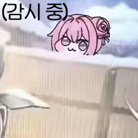
ㅇㅇ · 11.09 00:37:47
ㅇㅇ · 11.09 00:38:03
분분 · 11.09 00:39:18
ㅇㅇ · 11.09 00:39:43
· ㅇㅇ · 11.09 00:47:22
· ㅇㅇ · 11.09 01:27:55
ㅇㅇ · 11.09 00:39:45
· ㅇㅇ · 11.09 00:41:59
· ㅇㅇ · 11.09 00:58:05
· ㅇㅇ · 11.09 01:04:27
· ㅇㅇ · 11.09 02:28:31
ㅇㅇ · 11.09 00:39:45
ㅇㅇ · 11.09 00:39:47
ㅇㅇ · 11.09 00:39:56
· 번개장터 · 11.09 00:41:01
ㅇㅇ · 11.09 00:39:58
· ㅇㅇ · 11.09 00:40:31
암타황제강시현 · 11.09 00:40:18
· ㅇㅇ · 11.09 00:40:49
· ㅋㅋ · 11.09 00:43:00
ㅇㅇ · 11.09 00:41:03
ㅇㅇ · 11.09 00:41:23
ㅇㅇ · 11.09 00:41:36
· ㅇㅇ · 11.09 00:43:13
· ㅇㅇ · 11.09 01:00:36
ㅇㅇ · 11.09 00:42:06
ㅇㅇ · 11.09 00:42:25
yirein · 11.09 00:43:21
ㅇㅇ · 11.09 00:43:52
ㅇㅇ · 11.09 00:44:15
이클립스 · 11.09 00:44:19
ㅇㅇ · 11.09 00:44:27
· ㅇㅇ · 11.09 00:44:50
ㅇㅇ · 11.09 00:44:44
ㅇㅇ · 11.09 00:46:11
ㅇㅇ · 11.09 00:46:16
· ㅇㅇ · 11.09 00:51:23
· ㅇㅇ · 11.09 00:54:35
· ㅇㅇ · 11.09 00:56:14
· ㅇㅇ · 11.09 01:03:45
· ㅇㅇ · 11.09 01:13:06
· ㅇㅇ · 11.09 01:42:46
· ㅇㅇ · 11.09 02:24:10
ㅇㅇ · 11.09 00:46:40
· ㅇㅇ · 11.09 00:46:48
ㅇㅇ · 11.09 00:47:48
ㅇㅇ · 11.09 00:49:00
ㅇㅇ · 11.09 00:49:05
Critical_error* · 11.09 00:50:30
ㅇㅇ · 11.09 00:50:38
· ㅇㅇ · 11.09 00:55:15
ㅇㅇ · 11.09 00:51:34
· ㅇㅇ · 11.09 00:52:35
ㅇㅇ · 11.09 00:53:10
ㅇㅇ · 11.09 00:54:12
ㅇㅇ · 11.09 00:54:16
· ㅇㅇ · 11.09 00:56:11
· ㅇㅇ · 11.09 00:58:22
· ㅇㅇ · 11.09 01:00:38
ㅇㅇ · 11.09 00:54:57
ㅇㅇ · 11.09 00:55:31
ㅇㅇ · 11.09 00:57:39
ㅇㅊ4 · 11.09 00:58:58
ㅇㅇ · 11.09 00:59:56
ㅇㅇ · 11.09 01:01:21
ㅇㅇ · 11.09 01:01:46
· ㅇㅇ · 11.09 01:01:52
ㅇㅇ · 11.09 01:02:16
fairys · 11.09 01:03:08
미소노·미카 · 11.06 22:37:07
와히라나고미 · 11.06 22:37:40
· ㅇㅇ · 11.09 00:34:03
· ㅇㅇ · 11.09 00:39:56
· ㅇㅇ · 11.09 00:47:53
· oo · 11.09 00:51:59
· ㅇㅇ · 11.09 01:11:45
ㅇㅇ · 11.06 22:37:51
· ㅇㅇ · 11.09 00:53:34
ㅇㅇ · 11.06 22:39:52
ㅇㅇ · 11.06 22:44:16
ㅇㅇ · 11.06 22:44:28
· ㅇㅇ · 11.09 00:46:40
시끄러 · 11.06 22:47:10
ㅇㅇ · 11.06 22:47:46
ㅇㅇ · 11.06 22:47:47
ㅇㅇ · 11.06 22:52:01
섬마을대머리 · 11.06 22:52:19
ㅇㅇ · 11.06 22:55:00
ㅇㅇ · 11.06 22:56:29
땨뗘(봇) · 11.09 00:30:07
크리스티아노 · 11.09 00:30:45
· ㅋㅋ · 11.09 00:33:44
· ㅇㅇ · 11.09 00:36:06
· 암타황제강시현 · 11.09 00:40:22
메윈터 · 11.09 00:31:09
· 키노시타카즈야 · 11.09 00:49:48
ㅇㅇ · 11.09 00:31:57
· ㅇㅇ · 11.09 00:39:53
ㅋㅋ · 11.09 00:32:47
· 크리스티아노 · 11.09 00:34:04
· ㅇㅇ · 11.09 00:36:11
· 암타황제강시현 · 11.09 00:40:28
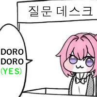
ㅇㅇ · 11.09 00:32:58
· ㅇㅇ · 11.09 01:12:29